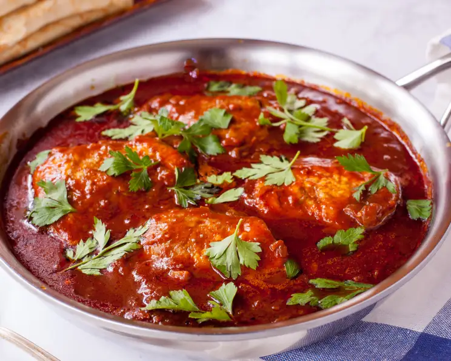
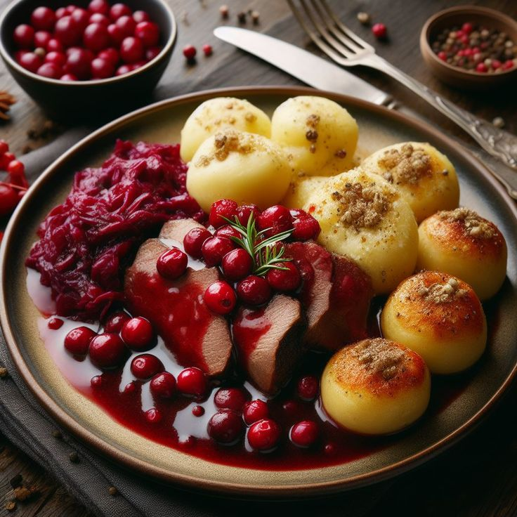
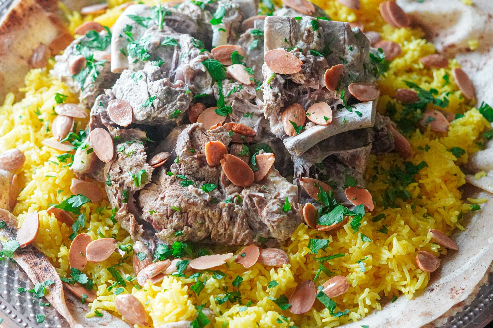
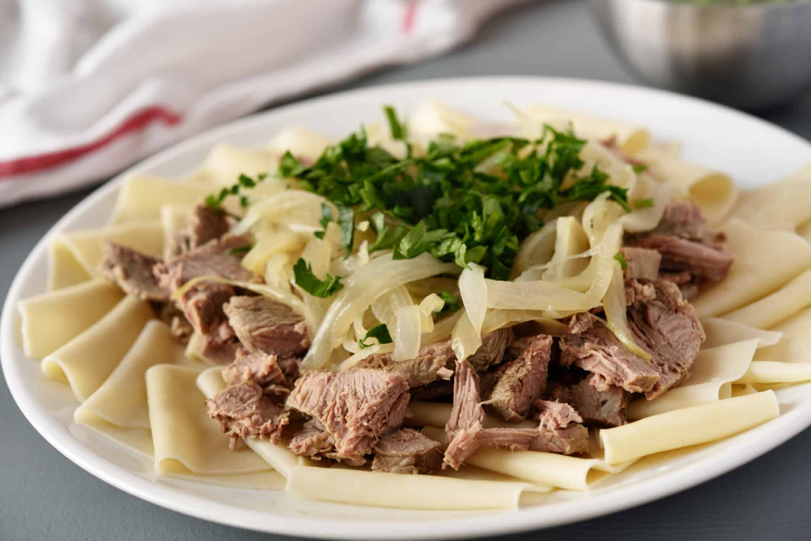
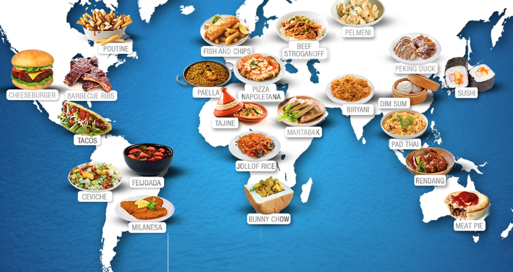

Brazil: Feijoada

Brazil’s rich, hearty feijoada is made with black beans and cuts of pork, including organ meats.
Many believe the dish originated with enslaved people who created stew with the leftovers from slavers,
but a recent challenge to that theory says it was brought to Brazil by European settlers. The popular
dish does reflect the needs of those who could afford only tougher, less costly cuts of meat that need to
be stewed for tenderizing.
Ethiopia: Doro wat

Ethiopia's signature meal is doro wat, a stew comprising chicken and eggs, seasoned with berbere,
a spice blend that includes coriander, cumin, cardamom, chilies, cloves, fenugreek, cinnamon, ginger,
turmeric, nutmeg, and allspice. Certain traditional dishes start with the killing of a chicken, which
is then divided into 12 pieces, believed by some to symbolize the 12 disciples of Christ.
Germany: Sauerbraten

Sauerbraten from Germany is a type of roasted beef, veal, or venison that is marinated for several
days in a mixture of vinegar, wine, vegetables, and various spices which help tenderize the meat.
In the past, it was prepared using horse meat. It originates thousands of years ago, when meat was
stored in red wine for transport to Roman settlements. The term "Sauerbraten" has German roots,
originating from Sauer, which translates to "sour" or "pickled," and Braten, meaning "roast meat",
hence "sour roast."
Jordan: Mansaf

Jordan's classic mansaf includes meat and rice, prepared in a sauce made from fermented dried yogurt.
It began with the wandering Bedouins, who utilized camel or lamb meat. It is presented at weddings,
funerals, religious celebrations, and other events, and is conventionally consumed together, with participants
gathering around a table, using their right hands for scooping and keeping their left hands clenched behind their backs.
Kazakhstan: Beshbarmak

Beshbarmak from Kazakhstan, typically prepared with horse or mutton but occasionally with beef or lamb,
consists of boiled meat served with noodles. It is conventionally presented on a large platter on a Darsakstan,
a low table, or on a clean cloth laid out on the ground. The host dishes out meat to guests according to their
status—pelvic and shin bones are designated for esteemed elderly guests, whereas young women receive portions of cervical vertebra.
Spain: Paella

The name of Spain's traditional dish, paella—filled with rice, seafood or meat, and seasoned with saffron—derives
from the Latin term patella, which means dish or platter. It is conventionally prepared over an open flame in a wide,
flat-bottomed pan to maximize the benefits of rapid, intense flames in an area that lacks woodlands with slow-burning firewood.
It is customary to enjoy paella in a family style, directly from the pan instead of using plates.


 The Roman Empire had a fully developed imperial cuisine that drew on foods from all over the known world. Scores of Roman food preparations
were passed down in the ancient cookbook colloquially known as Apicius, one of the earliest cookbooks in recorded history.
The book was named after the famous Roman merchant and epicurer Marcus Gavius Apicius. Although the Romans used fish
sauce in almost everything, modern Italian recipes do not call for it. Along with cumin and coriander, the Romans also made great use of the herb
lovage. These flavors are uncommon in modern Italian cooking, much like garum. In contrast, Apicius makes only one reference to basil, a common
seasoning in modern Italian cooking. Laserpitium was one of the most sought-after Roman seasonings. The Romans devoured the plant until it was extinct.
Laser served not only as a flexible cooking ingredient but was also utilized for health reasons (mainly as a digestive support); it might have been
viewed as a contraceptive too.
The Roman Empire had a fully developed imperial cuisine that drew on foods from all over the known world. Scores of Roman food preparations
were passed down in the ancient cookbook colloquially known as Apicius, one of the earliest cookbooks in recorded history.
The book was named after the famous Roman merchant and epicurer Marcus Gavius Apicius. Although the Romans used fish
sauce in almost everything, modern Italian recipes do not call for it. Along with cumin and coriander, the Romans also made great use of the herb
lovage. These flavors are uncommon in modern Italian cooking, much like garum. In contrast, Apicius makes only one reference to basil, a common
seasoning in modern Italian cooking. Laserpitium was one of the most sought-after Roman seasonings. The Romans devoured the plant until it was extinct.
Laser served not only as a flexible cooking ingredient but was also utilized for health reasons (mainly as a digestive support); it might have been
viewed as a contraceptive too.